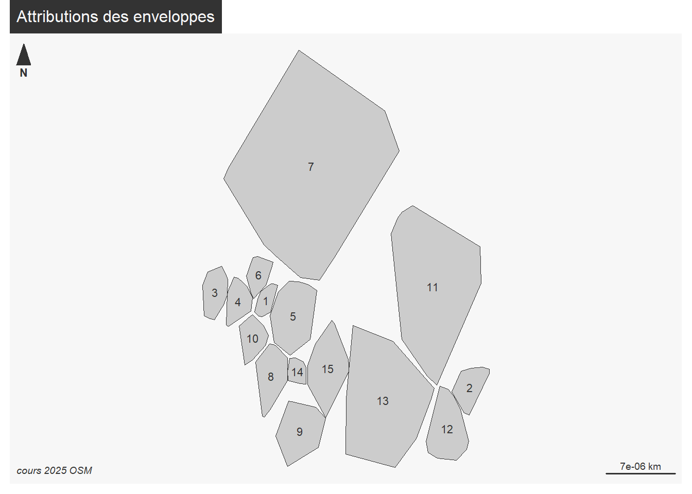
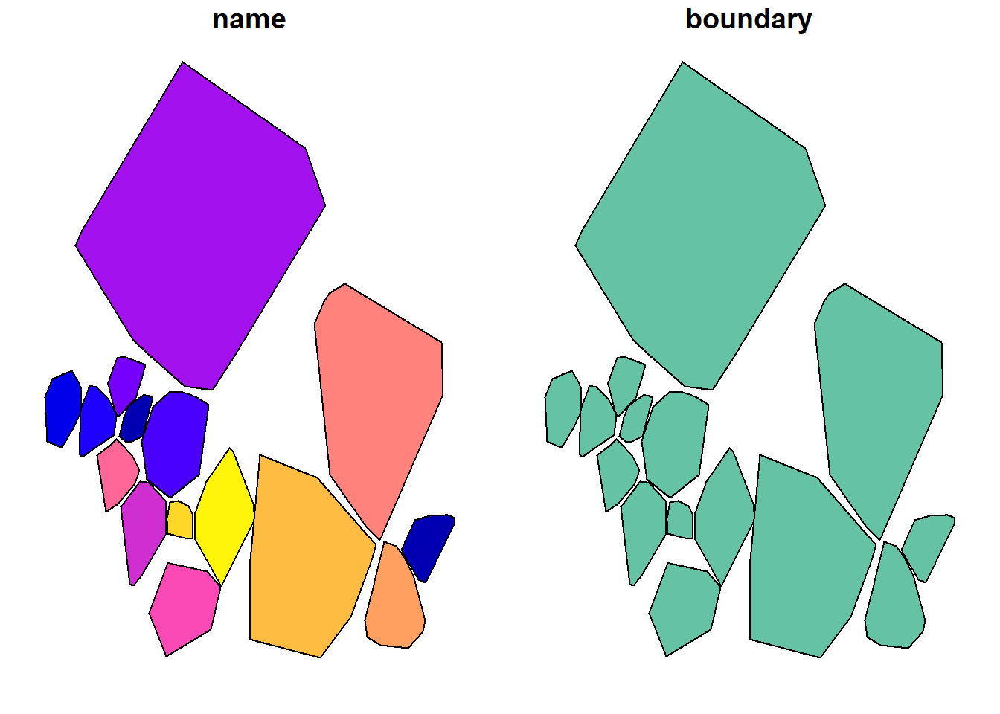
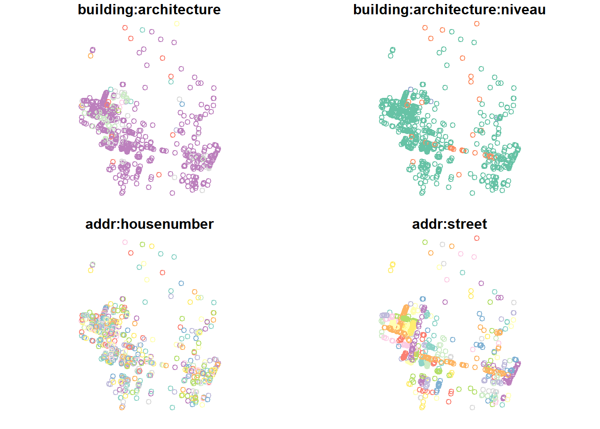
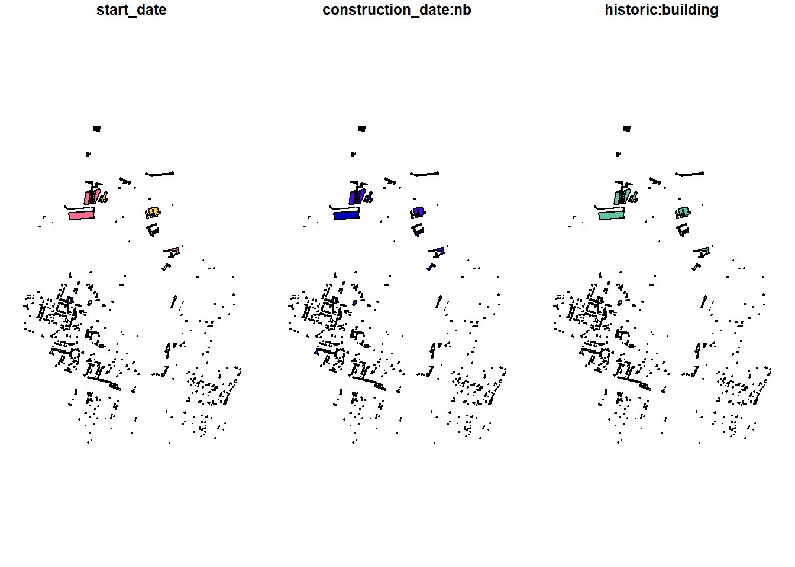
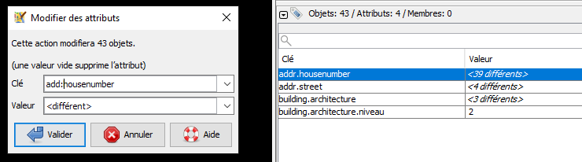

Code
demande <- read.csv("data/importJOSM.csv")
table(demande$couches.à.importer.dans.JOSM..ok..help.)
? help ok
4 7 3 Code
demande <- demande [demande$couches.à.importer.dans.JOSM..ok..help. != 'ok',]
zone <- demande$nom.zoneUne fois analysée la donnée, il s’agit de la saisir dans OSM.
3 couches en 4326 et geojson
celle des batiments avec la typo + année min (= mesBat4326 par exemple)
Le pt adresse avec adresse et typo2 (= mesAdresses4326)
l’enveloppe convexe attribuée (= maZone4326)
Pour chacune des 3 couches mettre uniquement les tags choisis par les étudiants

Le support présente les deux méthodes dans la procédure Préparer ses couches sous QGIS et encore une fois Simplifier ses couches

Les fichiers pour les étudiants demandeurs
demande <- read.csv("data/importJOSM.csv")
table(demande$couches.à.importer.dans.JOSM..ok..help.)
? help ok
4 7 3 demande <- demande [demande$couches.à.importer.dans.JOSM..ok..help. != 'ok',]
zone <- demande$nom.zonelibrary(sf)
enveloppe <- st_read("data/enveloppeParEtudiant.geojson")Reading layer `enveloppeParEtudiant' from data source
`C:\Users\geographie1\coursP8\data\enveloppeParEtudiant.geojson'
using driver `GeoJSON'
Simple feature collection with 15 features and 5 fields
Geometry type: POLYGON
Dimension: XY
Bounding box: xmin: 2.470607 ymin: 48.88915 xmax: 2.499733 ymax: 48.917
Geodetic CRS: WGS 84adresse <- st_read("data/patrimoine.gpkg", "geocodageM3")Reading layer `geocodageM3' from data source
`C:\Users\geographie1\coursP8\data\patrimoine.gpkg' using driver `GPKG'
Simple feature collection with 652 features and 20 fields
Geometry type: POINT
Dimension: XY
Bounding box: xmin: 2.470726 ymin: 48.88918 xmax: 2.499813 ymax: 48.91284
Geodetic CRS: WGS 84bat <- st_read("data/agregationCadastrePatrimoine.geojson")Reading layer `agregationCadastrePatrimoine' from data source
`C:\Users\geographie1\coursP8\data\agregationCadastrePatrimoine.geojson'
using driver `GeoJSON'
Simple feature collection with 1064 features and 5 fields
Geometry type: MULTIPOLYGON
Dimension: XY
Bounding box: xmin: 661185.3 ymin: 6865576 xmax: 663328.2 ymax: 6868708
Projected CRS: RGF93 v1 / Lambert-93# conversion en 4326
bat <- st_transform(bat, 4326)# renommage tags
names(enveloppe)[1] "CLUSTER_ID"
[2] "CLUSTER_SIZE"
[3] "anomalieEtudiant_prénom"
[4] "anomalieEtudiant_anomalie...géocodage"
[5] "anomalieEtudiant_anomalie...typologie"
[6] "geometry" enveloppe$boundary <- "patrimoine"
enveloppe$name <- enveloppe$CLUSTER_ID
library(mapsf)
mf_map(enveloppe)
mf_label(enveloppe, var = "name")
mf_layout("Attributions des enveloppes", "cours 2025 OSM")
# filtrage tags
enveloppe <- enveloppe [, c("name", "boundary")]
plot(enveloppe)
names(adresse) [1] "typo" "niveau" "adresse"
[4] "code" "result_score" "result_score_next"
[7] "result_label" "result_type" "result_id"
[10] "result_housenumber" "result_name" "result_street"
[13] "result_postcode" "result_city" "result_context"
[16] "result_citycode" "result_oldcitycode" "result_oldcity"
[19] "result_district" "result_status" "geom" adresse$'building:architecture' <- adresse$typo
adresse$'building:architecture:niveau'<- adresse$niveau
adresse$'addr:housenumber' <- adresse$result_housenumber
adresse$'addr:street' <- adresse$result_street
adresse <- adresse [, c("building:architecture", "building:architecture:niveau", "addr:housenumber", "addr:street")]
plot(adresse)
names(bat)[1] "nb" "parcelle"
[3] "construction_date" "building.architecture"
[5] "building.architecture.niveau" "geometry" names(bat)[1] <- "construction_date:nb"
names(bat)[3] <- "start_date"
bat$'historic:building' <- "yes"
bat <- bat [, c("start_date", "construction_date:nb", "historic:building")]
plot(bat)
Vérification de la validité des géométries
table(st_is_valid(bat))
FALSE TRUE
4 1060 bat <- bat [st_is_valid(bat),]zone <- c(1, zone)
for (z in zone){
print(z)
sel <- enveloppe [enveloppe$name == z,]
st_write(sel, paste0("data/demande/",z,"_zone.geojson"), append=F)
interBat <- st_intersection(bat, sel)
interBat
interBat <- interBat [, c("start_date", "construction_date.nb", "historic.building")]
st_write(interBat, paste0("data/demande/",z,"_bat.geojson") , append = F)
interAdresse <- st_intersection(adresse, sel)
interAdresse <- interAdresse [, c("building.architecture", "building.architecture.niveau", "addr.housenumber", "addr.street")]
st_write(interAdresse, paste0("data/demande/",z,"_adresse.geojson") , append = F)
}[1] 1
Deleting layer not supported by driver `GeoJSON'
Deleting layer `1_zone' failed
Writing layer `1_zone' to data source
`data/demande/1_zone.geojson' using driver `GeoJSON'
Updating existing layer 1_zone
Writing 1 features with 2 fields and geometry type Polygon.
Deleting layer not supported by driver `GeoJSON'
Deleting layer `1_bat' failed
Writing layer `1_bat' to data source
`data/demande/1_bat.geojson' using driver `GeoJSON'
Updating existing layer 1_bat
Writing 58 features with 3 fields and geometry type Unknown (any).
Deleting layer not supported by driver `GeoJSON'
Deleting layer `1_adresse' failed
Writing layer `1_adresse' to data source
`data/demande/1_adresse.geojson' using driver `GeoJSON'
Updating existing layer 1_adresse
Writing 43 features with 4 fields and geometry type Point.
[1] 2
Deleting layer not supported by driver `GeoJSON'
Deleting layer `2_zone' failed
Writing layer `2_zone' to data source
`data/demande/2_zone.geojson' using driver `GeoJSON'
Updating existing layer 2_zone
Writing 1 features with 2 fields and geometry type Polygon.
Deleting layer not supported by driver `GeoJSON'
Deleting layer `2_bat' failed
Writing layer `2_bat' to data source
`data/demande/2_bat.geojson' using driver `GeoJSON'
Updating existing layer 2_bat
Writing 59 features with 3 fields and geometry type Unknown (any).
Deleting layer not supported by driver `GeoJSON'
Deleting layer `2_adresse' failed
Writing layer `2_adresse' to data source
`data/demande/2_adresse.geojson' using driver `GeoJSON'
Updating existing layer 2_adresse
Writing 22 features with 4 fields and geometry type Point.
[1] 3
Deleting layer not supported by driver `GeoJSON'
Deleting layer `3_zone' failed
Writing layer `3_zone' to data source
`data/demande/3_zone.geojson' using driver `GeoJSON'
Updating existing layer 3_zone
Writing 1 features with 2 fields and geometry type Polygon.
Deleting layer not supported by driver `GeoJSON'
Deleting layer `3_bat' failed
Writing layer `3_bat' to data source
`data/demande/3_bat.geojson' using driver `GeoJSON'
Updating existing layer 3_bat
Writing 65 features with 3 fields and geometry type Unknown (any).
Deleting layer not supported by driver `GeoJSON'
Deleting layer `3_adresse' failed
Writing layer `3_adresse' to data source
`data/demande/3_adresse.geojson' using driver `GeoJSON'
Updating existing layer 3_adresse
Writing 42 features with 4 fields and geometry type Point.
[1] 4
Deleting layer not supported by driver `GeoJSON'
Deleting layer `4_zone' failed
Writing layer `4_zone' to data source
`data/demande/4_zone.geojson' using driver `GeoJSON'
Updating existing layer 4_zone
Writing 1 features with 2 fields and geometry type Polygon.
Deleting layer not supported by driver `GeoJSON'
Deleting layer `4_bat' failed
Writing layer `4_bat' to data source
`data/demande/4_bat.geojson' using driver `GeoJSON'
Updating existing layer 4_bat
Writing 66 features with 3 fields and geometry type Unknown (any).
Deleting layer not supported by driver `GeoJSON'
Deleting layer `4_adresse' failed
Writing layer `4_adresse' to data source
`data/demande/4_adresse.geojson' using driver `GeoJSON'
Updating existing layer 4_adresse
Writing 34 features with 4 fields and geometry type Point.
[1] 5
Deleting layer not supported by driver `GeoJSON'
Deleting layer `5_zone' failed
Writing layer `5_zone' to data source
`data/demande/5_zone.geojson' using driver `GeoJSON'
Updating existing layer 5_zone
Writing 1 features with 2 fields and geometry type Polygon.
Deleting layer not supported by driver `GeoJSON'
Deleting layer `5_bat' failed
Writing layer `5_bat' to data source
`data/demande/5_bat.geojson' using driver `GeoJSON'
Updating existing layer 5_bat
Writing 72 features with 3 fields and geometry type Unknown (any).
Deleting layer not supported by driver `GeoJSON'
Deleting layer `5_adresse' failed
Writing layer `5_adresse' to data source
`data/demande/5_adresse.geojson' using driver `GeoJSON'
Updating existing layer 5_adresse
Writing 32 features with 4 fields and geometry type Point.
[1] 7
Deleting layer not supported by driver `GeoJSON'
Deleting layer `7_zone' failed
Writing layer `7_zone' to data source
`data/demande/7_zone.geojson' using driver `GeoJSON'
Updating existing layer 7_zone
Writing 1 features with 2 fields and geometry type Polygon.
Deleting layer not supported by driver `GeoJSON'
Deleting layer `7_bat' failed
Writing layer `7_bat' to data source
`data/demande/7_bat.geojson' using driver `GeoJSON'
Updating existing layer 7_bat
Writing 128 features with 3 fields and geometry type Unknown (any).
Deleting layer not supported by driver `GeoJSON'
Deleting layer `7_adresse' failed
Writing layer `7_adresse' to data source
`data/demande/7_adresse.geojson' using driver `GeoJSON'
Updating existing layer 7_adresse
Writing 27 features with 4 fields and geometry type Point.
[1] 8
Deleting layer not supported by driver `GeoJSON'
Deleting layer `8_zone' failed
Writing layer `8_zone' to data source
`data/demande/8_zone.geojson' using driver `GeoJSON'
Updating existing layer 8_zone
Writing 1 features with 2 fields and geometry type Polygon.
Deleting layer not supported by driver `GeoJSON'
Deleting layer `8_bat' failed
Writing layer `8_bat' to data source
`data/demande/8_bat.geojson' using driver `GeoJSON'
Updating existing layer 8_bat
Writing 60 features with 3 fields and geometry type Unknown (any).
Deleting layer not supported by driver `GeoJSON'
Deleting layer `8_adresse' failed
Writing layer `8_adresse' to data source
`data/demande/8_adresse.geojson' using driver `GeoJSON'
Updating existing layer 8_adresse
Writing 32 features with 4 fields and geometry type Point.
[1] 9
Deleting layer not supported by driver `GeoJSON'
Deleting layer `9_zone' failed
Writing layer `9_zone' to data source
`data/demande/9_zone.geojson' using driver `GeoJSON'
Updating existing layer 9_zone
Writing 1 features with 2 fields and geometry type Polygon.
Deleting layer not supported by driver `GeoJSON'
Deleting layer `9_bat' failed
Writing layer `9_bat' to data source
`data/demande/9_bat.geojson' using driver `GeoJSON'
Updating existing layer 9_bat
Writing 65 features with 3 fields and geometry type Unknown (any).
Deleting layer not supported by driver `GeoJSON'
Deleting layer `9_adresse' failed
Writing layer `9_adresse' to data source
`data/demande/9_adresse.geojson' using driver `GeoJSON'
Updating existing layer 9_adresse
Writing 40 features with 4 fields and geometry type Point.
[1] 10
Deleting layer not supported by driver `GeoJSON'
Deleting layer `10_zone' failed
Writing layer `10_zone' to data source
`data/demande/10_zone.geojson' using driver `GeoJSON'
Updating existing layer 10_zone
Writing 1 features with 2 fields and geometry type Polygon.
Deleting layer not supported by driver `GeoJSON'
Deleting layer `10_bat' failed
Writing layer `10_bat' to data source
`data/demande/10_bat.geojson' using driver `GeoJSON'
Updating existing layer 10_bat
Writing 66 features with 3 fields and geometry type Unknown (any).
Deleting layer not supported by driver `GeoJSON'
Deleting layer `10_adresse' failed
Writing layer `10_adresse' to data source
`data/demande/10_adresse.geojson' using driver `GeoJSON'
Updating existing layer 10_adresse
Writing 37 features with 4 fields and geometry type Point.
[1] 11
Deleting layer not supported by driver `GeoJSON'
Deleting layer `11_zone' failed
Writing layer `11_zone' to data source
`data/demande/11_zone.geojson' using driver `GeoJSON'
Updating existing layer 11_zone
Writing 1 features with 2 fields and geometry type Polygon.
Deleting layer not supported by driver `GeoJSON'
Deleting layer `11_bat' failed
Writing layer `11_bat' to data source
`data/demande/11_bat.geojson' using driver `GeoJSON'
Updating existing layer 11_bat
Writing 67 features with 3 fields and geometry type Unknown (any).
Deleting layer not supported by driver `GeoJSON'
Deleting layer `11_adresse' failed
Writing layer `11_adresse' to data source
`data/demande/11_adresse.geojson' using driver `GeoJSON'
Updating existing layer 11_adresse
Writing 42 features with 4 fields and geometry type Point.
[1] 12
Deleting layer not supported by driver `GeoJSON'
Deleting layer `12_zone' failed
Writing layer `12_zone' to data source
`data/demande/12_zone.geojson' using driver `GeoJSON'
Updating existing layer 12_zone
Writing 1 features with 2 fields and geometry type Polygon.
Deleting layer not supported by driver `GeoJSON'
Deleting layer `12_bat' failed
Writing layer `12_bat' to data source
`data/demande/12_bat.geojson' using driver `GeoJSON'
Updating existing layer 12_bat
Writing 65 features with 3 fields and geometry type Unknown (any).
Deleting layer not supported by driver `GeoJSON'
Deleting layer `12_adresse' failed
Writing layer `12_adresse' to data source
`data/demande/12_adresse.geojson' using driver `GeoJSON'
Updating existing layer 12_adresse
Writing 35 features with 4 fields and geometry type Point.
[1] 14
Deleting layer not supported by driver `GeoJSON'
Deleting layer `14_zone' failed
Writing layer `14_zone' to data source
`data/demande/14_zone.geojson' using driver `GeoJSON'
Updating existing layer 14_zone
Writing 1 features with 2 fields and geometry type Polygon.
Deleting layer not supported by driver `GeoJSON'
Deleting layer `14_bat' failed
Writing layer `14_bat' to data source
`data/demande/14_bat.geojson' using driver `GeoJSON'
Updating existing layer 14_bat
Writing 63 features with 3 fields and geometry type Unknown (any).
Deleting layer not supported by driver `GeoJSON'
Deleting layer `14_adresse' failed
Writing layer `14_adresse' to data source
`data/demande/14_adresse.geojson' using driver `GeoJSON'
Updating existing layer 14_adresse
Writing 46 features with 4 fields and geometry type Point.Attention, les “:” sont remplacés par des “.”, il faut corriger sous JOSM avec un rechercher (CTRL + F)

voir ici
Comment appelle-t-on les attributs dans OSM ?
exemple pour les rues

Il n’y a rien de plus difficile que de recopier un texte. building peut devenir Building par exemple.
Observer les attributs, repérer les erreurs d’attributs avec osmose
Quels sont les deux primitives géométriques vues le premier jour ?
A priori, pas de travail sur la géométrie, mais il peut y avoir des opérations à mener sur la géométrie des bâtiments.
Pas de panique, la communauté OSM a produit une osmecum sur les bâtiments.
Les deux boutons

Essayer de télécharger :

sa zone via une carte glissante,
et enfin à partir du raccourci décrit dans la procédure Importer sa zone
Le tableau des imports en masse dans OSM
et notamment sur les arbres isolés de St Etienne :
L’exemple d’un projet git sur l’import des arbres dans OSM
voir sur forum des utilisateurs OSM en France
Ponctuellement, on peut essayer, faire la requête overpass sur natural=tree in bondy
Trouver l’erreur dans le square Mitterrand.


Donc il vaut mieux faire un import au cas par cas, surtout que, pour les bâtiments patrimoniaux, le bâtiment existe déjà.
Ces outils qui permettent une saisie plus facile
Détailler le fonctionnement, voir alterzorg

Il s’agit de travailler uniquement sur les bâtiments.
Dans la procédure Importer sa zone, voir le point 3. Colorier sa zone
Que dire d’une extension .mapcss ?*
Voir procédure Saisie JOSM
Attention au commentaire du changeset ! (#Paris8_Bondy2025)

Dans le framacalc, les étudiants mettent le nombre de saisies effectuées et les difficultés rencontrées
Afin de vérifier la saisie, quel tag proposer dans Overpass turbo ?
Voir procédure Utiliser overpass turbo